Issue
Watering plants when the apartment is occupied by guests.
Materials
- Main hose 1/2" (16 mm diameter): Tubo BD Pn 6 Ø 16mm. al metro
- Main hose end cap 1/2": Tappo con ghiera PN4 Ø 16mm
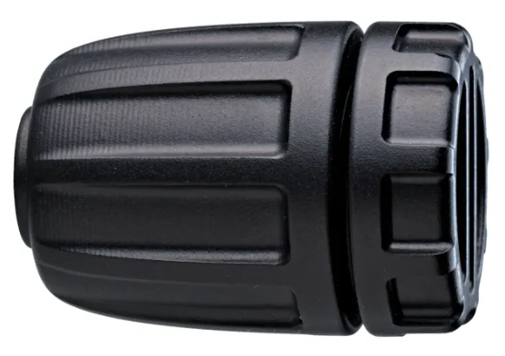
- Main hose automatic coupling 1/2": Raccordo automatico CLICK plastica 1/2″ (13-16mm) Claber 91009
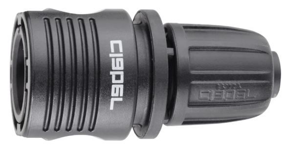
- Gomito PN4 Ø
16 x 16 mm
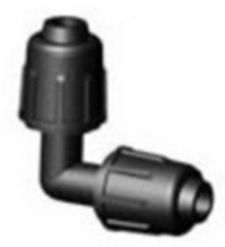
- Tap connectors set:
- Modulo Siroflex 5001 a 2 vie attacchi 3/4 m/f con valvole di chiusura
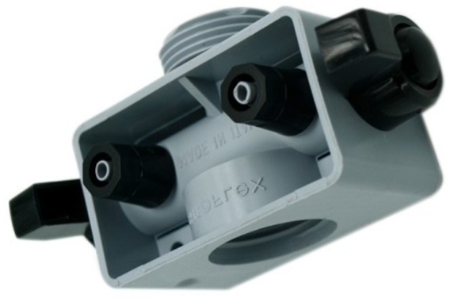
- Tappo
Ghiera 3/4″ f Siroflex 5035
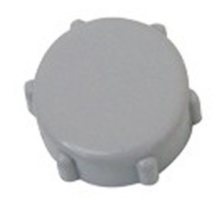
- Tee con ghiera PN4 x ala ø 16 X 3/4″
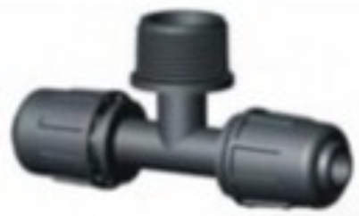
- Guarnizione in gomma 3/4″” conf 5 pz. Siroflex 4953/1
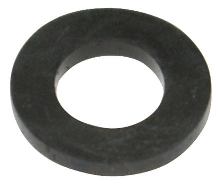
- Claber Tubo capillare 20 m, in PE flessibile nero da 1/4" (4-6 mm)
- Claber Raccordo a 3 vie per tubo da 4-6mm (10
Pezzi)
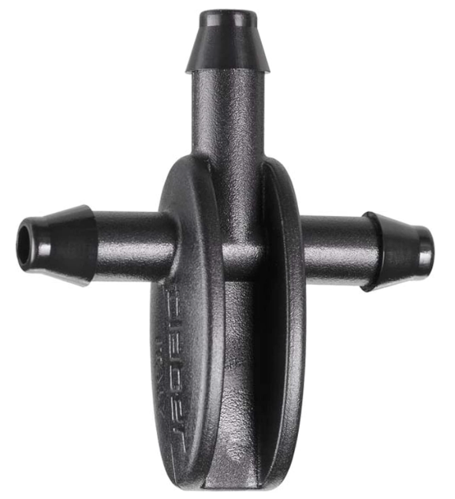
- Gocciolatori Claber 91211
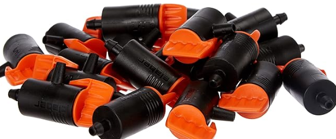
Layout
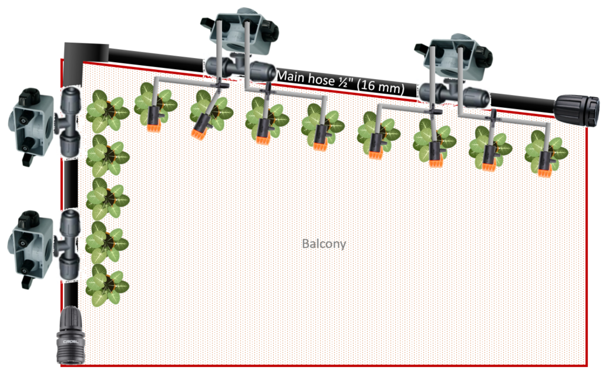
Watering computer
Generic version for immediate use: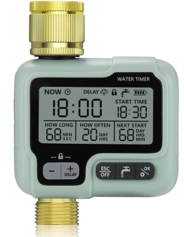
LIDL version, but you need to wait for it: (it has more settings "nice to have" such like the absorbtion time)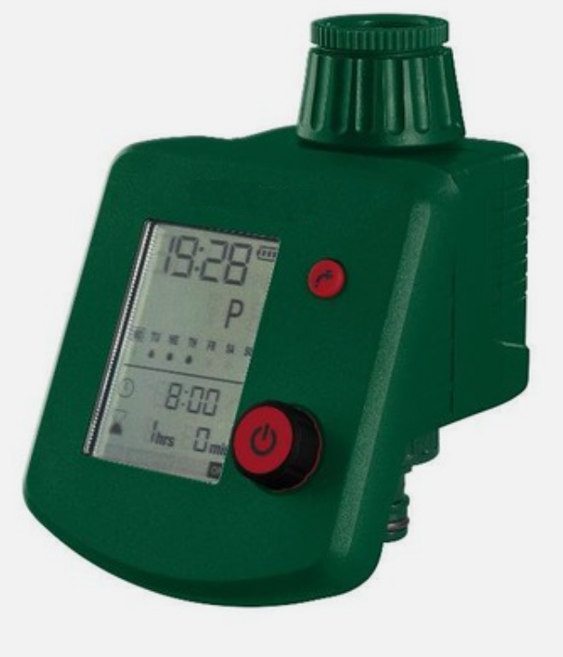
About both devices I don't really like the fact that if the battery dies then the valve remains in position. It may can happen that it can be left open for any reason.Exagerate version
Made with a LOGO!8 Siemens. This is just a prototype!This is the main circuit diagram:
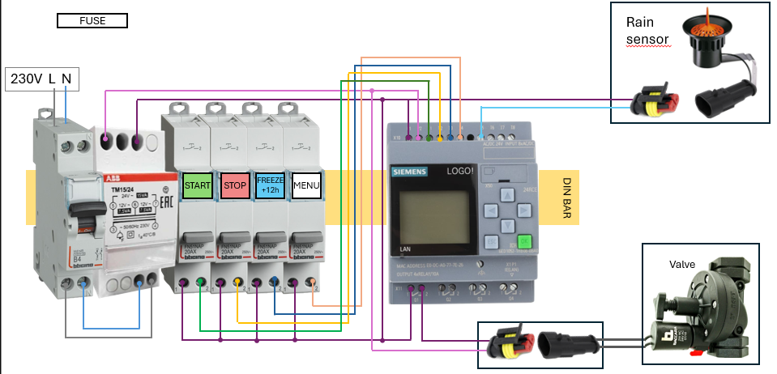
The sofware to load into the LOGO! PLC will be like this: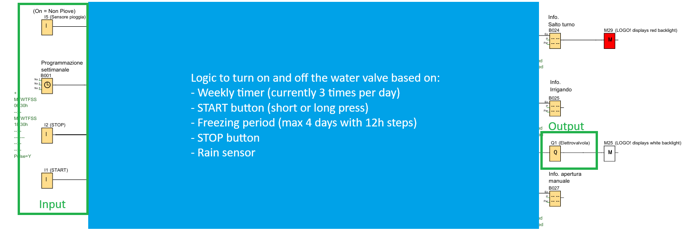
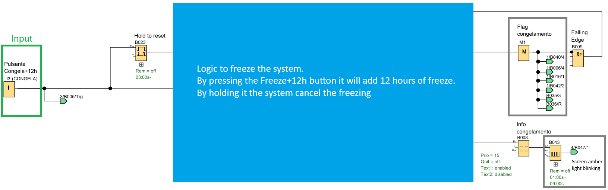
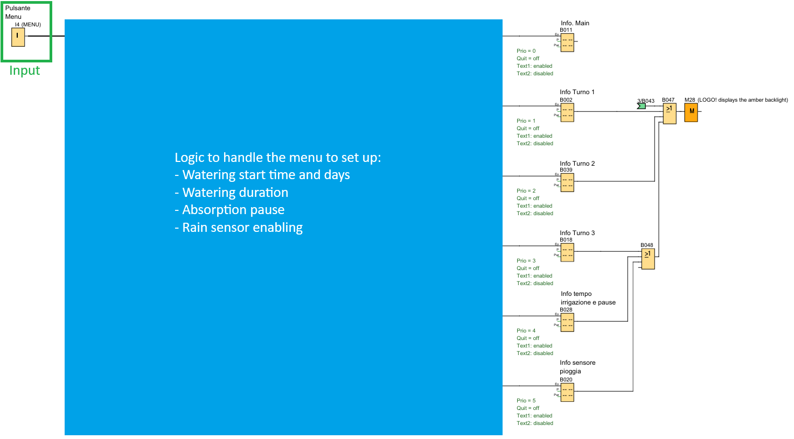
Screenshots of the LOGO! display: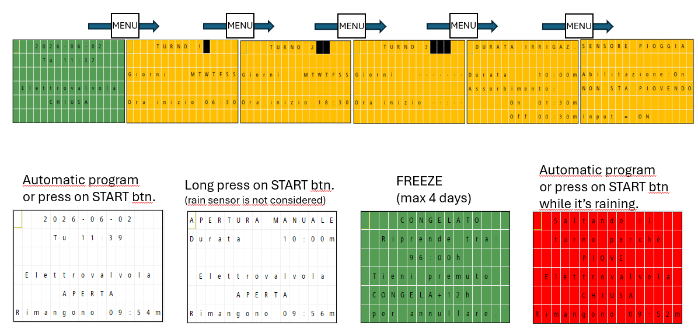
Possible improvements:- Event log on SD card. (LOGO! has a slot for an SD card.)
- Extra programmable watering time.
- More valves to operate.
- Seasonal percentage on watering time.
- Web interface. (LOGO! need to be connected with ethernet to your router.)
- Amazon AWS integration for remote handling.
Lighter version
Made with a generic Timer.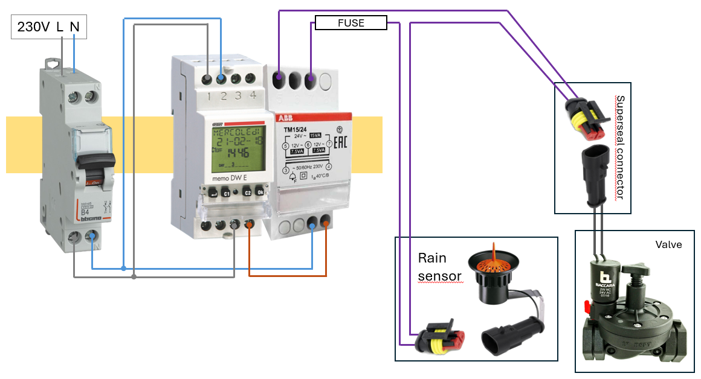